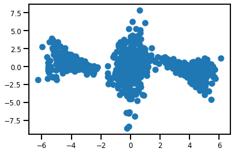
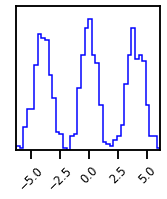
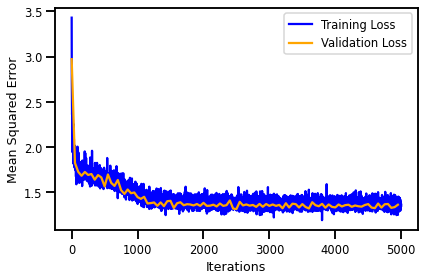
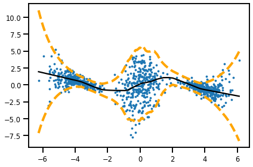
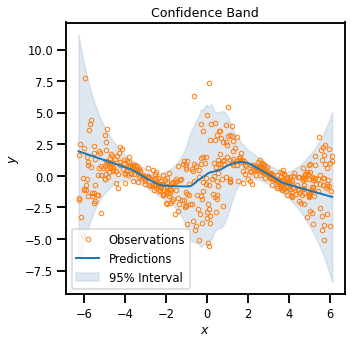
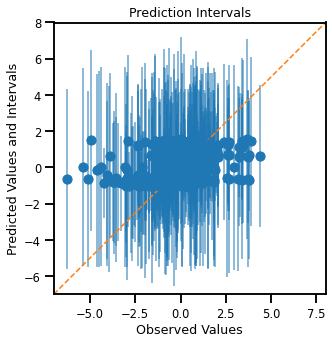
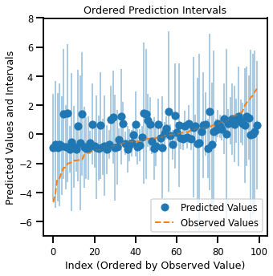
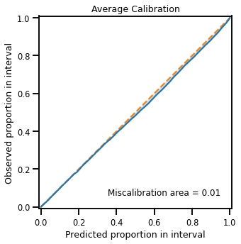
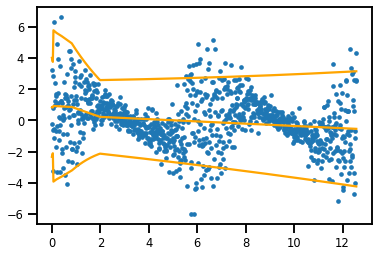

Regression Demo - Neural Network#
# @title Install Packages
# %%capture
try:
import sys, os
from pyprojroot import here
# spyder up to find the root
root = here(project_files=[".here"])
# append to path
sys.path.append(str(root))
except ModuleNotFoundError:
import os
os.system("pip install objax chex")
os.system("pip install git+https://github.com/IPL-UV/rbig_jax.git#egg=rbig_jax")
# jax packages
import jax
import jax.numpy as jnp
from jax.config import config
# import chex
config.update("jax_enable_x64", False)
import objax
import chex
import numpy as np
from functools import partial
# library functions
from rbig_jax.transforms.parametric.mixture.logistic import InitMixtureLogisticCDF
from rbig_jax.transforms.parametric.mixture.gaussian import InitMixtureGaussianCDF
from rbig_jax.transforms.logit import InitLogitTransform
from rbig_jax.transforms.inversecdf import InitInverseGaussCDF
from rbig_jax.transforms.parametric.householder import InitHouseHolder
from distrax._src.bijectors.sigmoid import Sigmoid
from distrax._src.bijectors.inverse import Inverse
KEY = jax.random.PRNGKey(seed=123)
# logging
import tqdm
import wandb
# plot methods
import matplotlib.pyplot as plt
from matplotlib import cm
import seaborn as sns
import corner
from IPython.display import HTML
sns.reset_defaults()
sns.set_context(context="talk", font_scale=0.7)
%load_ext lab_black
%matplotlib inline
%load_ext autoreload
%autoreload 2
INFO:tensorflow:Enabling eager execution
INFO:tensorflow:Enabling v2 tensorshape
INFO:tensorflow:Enabling resource variables
INFO:tensorflow:Enabling tensor equality
INFO:tensorflow:Enabling control flow v2
WARNING:absl:No GPU/TPU found, falling back to CPU. (Set TF_CPP_MIN_LOG_LEVEL=0 and rerun for more info.)
Demo Data#
from distrax._src.distributions.categorical import Categorical
from distrax._src.distributions.mixture_same_family import MixtureSameFamily
from distrax._src.distributions.bernoulli import Bernoulli
from distrax._src.distributions.uniform import Uniform
from distrax._src.distributions.normal import Normal
from tensorflow_probability.substrates import jax as tfp
tfd = tfp.distributions
logits = jnp.array([0.33, 0.33, 0.33])
probs = jax.nn.softmax(logits, axis=-1)
x_cat_dist = Categorical(probs=probs)
norm_dist = Normal(loc=[-4.0, 0.0, 4.0], scale=[0.4, 0.6, 0.4])
mix_dist = MixtureSameFamily(x_cat_dist, norm_dist)
def synthetic_mixture(n_samples: int = 1_000, X=None):
if X is None:
logits = jnp.array([1.0, 1.0, 1.0])
probs = jax.nn.softmax(logits, axis=-1)
x_cat_dist = Categorical(probs=probs)
norm_dist = Normal(loc=[-4.0, 0.0, 4.0], scale=[0.7, 0.6, 0.7])
mix_dist = MixtureSameFamily(x_cat_dist, norm_dist)
X_samples = mix_dist.sample(seed=123, sample_shape=(n_samples,))[:, None]
else:
X_samples = X
loc = np.sin(X_samples.ravel())
scale = np.exp(np.cos(X_samples.ravel()))
Y = np.random.normal(loc, scale)[:, None]
return X_samples, Y
def synthetic_bowtie(n_samples: int = 1_000, X=None):
if X is None:
X = jnp.linspace(0, 4 * jnp.pi, n_samples)[:, None]
loc = np.sin(X.ravel())
scale = np.exp(np.cos(X.ravel()))
Y = np.random.normal(loc, scale)[:, None]
return X, Y
/home/emmanuel/.conda/envs/jax_py38/lib/python3.8/site-packages/jax/_src/numpy/lax_numpy.py:5256: UserWarning: Explicitly requested dtype <class 'jax._src.numpy.lax_numpy.int64'> requested in astype is not available, and will be truncated to dtype int32. To enable more dtypes, set the jax_enable_x64 configuration option or the JAX_ENABLE_X64 shell environment variable. See https://github.com/google/jax#current-gotchas for more.
lax._check_user_dtype_supported(dtype, "astype")
import tensorflow_datasets as tfds
import tensorflow as tf
from sklearn import datasets
import tensorflow_datasets as tfds
from typing import Iterator, Mapping
import numpy as np
Batch = Mapping[str, np.ndarray]
def load_dataset(
n_samples: int, batch_size: int, seed: int, noise: float = 0.05,
) -> Iterator[Batch]:
# make random normally distributed data
rng = np.random.RandomState(seed)
X, Y = synthetic_mixture(n_samples)
ds = tf.data.Dataset.from_tensor_slices((X, Y))
ds = ds.shuffle(buffer_size=10 * batch_size)
ds = ds.batch(batch_size)
ds = ds.prefetch(buffer_size=5)
ds = ds.repeat()
return iter(tfds.as_numpy(ds))
# train/valid dataset loaders
# wandb_logger.config.batch_size = 128
n_init_samples = 1_000
n_train = 1_000
init_ds = load_dataset(n_init_samples, n_init_samples, 123)
# demo batch
init_X, init_Y = next(init_ds)
init_X.shape, init_Y.shape
/home/emmanuel/.conda/envs/jax_py38/lib/python3.8/site-packages/jax/_src/numpy/lax_numpy.py:5256: UserWarning: Explicitly requested dtype <class 'jax._src.numpy.lax_numpy.int64'> requested in astype is not available, and will be truncated to dtype int32. To enable more dtypes, set the jax_enable_x64 configuration option or the JAX_ENABLE_X64 shell environment variable. See https://github.com/google/jax#current-gotchas for more.
lax._check_user_dtype_supported(dtype, "astype")
((1000, 1), (1000, 1))
fig, ax = plt.subplots()
ax.scatter(init_X, init_Y)
plt.show()

# plot data
fig = corner.corner(init_X, color="blue", hist_bin_factor=2)

DataLoader#
from typing import Optional
from chex import Array
from einops import rearrange
PRNGKey = Array
def prepare_data(batch: Batch) -> Array:
inputs, labels = batch
# select image from tfds
inputs = inputs.astype(jnp.float32)
labels = labels.astype(jnp.float32)
# make 1D
# labels = jnp.expand_dims(labels, axis=-1)
return inputs, labels
Init Data#
# initialization data
n_init_samples = 1_000
init_ds = load_dataset(n_init_samples, n_init_samples, 123)
# demo batch
init_ds = next(init_ds)
X_init, Y_init = prepare_data(init_ds)
X_init, Y_init = np.array(X_init), np.array(Y_init)
/home/emmanuel/.conda/envs/jax_py38/lib/python3.8/site-packages/jax/_src/numpy/lax_numpy.py:5256: UserWarning: Explicitly requested dtype <class 'jax._src.numpy.lax_numpy.int64'> requested in astype is not available, and will be truncated to dtype int32. To enable more dtypes, set the jax_enable_x64 configuration option or the JAX_ENABLE_X64 shell environment variable. See https://github.com/google/jax#current-gotchas for more.
lax._check_user_dtype_supported(dtype, "astype")
Simple Model#
from distrax._src.distributions.log_stddev_normal import LogStddevNormal
from typing import Sequence, Callable, Tuple
import flax
from flax import linen as nn
from flax import struct
class ExplicitMLP(nn.Module):
features: Sequence[int]
def setup(self):
# we automatically know what to do with lists, dicts of submodules
self.layers = [nn.Dense(feat) for feat in self.features]
# for single submodules, we would just write:
# self.layer1 = nn.Dense(self, feat1)
def __call__(self, inputs):
x = inputs
for i, lyr in enumerate(self.layers):
x = lyr(x)
if i != len(self.layers) - 1:
x = nn.relu(x)
return x
class ProbNet(nn.Module):
features: Sequence[int]
def setup(self):
self.core_net = ExplicitMLP(features=self.features)
def __call__(self, inputs):
x = self.core_net(inputs)
return x
class DualHeadProbNet(nn.Module):
core_features: Sequence[int]
head_features: Sequence[int]
def setup(self):
self.core_net = ExplicitMLP(features=self.core_features)
self.loc_net = ExplicitMLP(features=self.head_features)
self.std_net = ExplicitMLP(features=self.head_features)
def __call__(self, inputs):
x = self.core_net(inputs)
loc_preds = self.loc_net(x)
stds_preds = self.std_net(x)
return jnp.concatenate([loc_preds, stds_preds], axis=1)
const = jnp.log(jnp.expm1(1.0))
@struct.dataclass
class ConditionalModel:
params: dict
model: Callable = struct.field(pytree_node=False)
def forward(self, inputs) -> Tuple[Array, Array]:
# forward pass for params
outputs = self.model.apply(self.params, inputs)
# split params
split = outputs.shape[1] // 2
# compute means and log stds
means = outputs[..., :split]
log_stds = outputs[..., split:]
dist = LogStddevNormal(loc=means, log_scale=log_stds)
return dist
from distrax._src.distributions.normal import Normal
# create model
input_features = X_init.shape[1]
# model = nn.Dense(features=input_features * 2)
model = ProbNet(features=[64, 64, 2])
# model = DualHeadProbNet(core_features=[64, 64], head_features=[32, 16, 1])
# create dummy variable
rng, model_rng = jax.random.split(KEY, 2)
params = model.init(model_rng, X_init)
# initialize conditional model
cond_model = ConditionalModel(params=params, model=model)
# forward pass
y_dist = cond_model.forward(X_init)
y_dist.mean().shape, y_dist.stddev().shape
((1000, 1), (1000, 1))
plt.scatter(X_init, y_dist.mean())
plt.scatter(X_init, y_dist.mean() + 1.96 * y_dist.stddev())
plt.scatter(X_init, y_dist.mean() - 1.96 * y_dist.stddev())
plt.scatter(X_init, Y_init, s=10)
<matplotlib.collections.PathCollection at 0x7f5126c7a730>
Loss Functions#
from chex import dataclass
from distrax._src.distributions.log_stddev_normal import LogStddevNormal
def nll_loss(y_mu, y_std, y_true):
dist = LogStddevNormal(loc=y_mu, log_scale=y_std)
nll = dist.log_prob(y_true).sum(axis=1)
return -jnp.mean(nll)
def loss_fn(model, batch: Batch) -> Array:
inputs, outputs = prepare_data(batch)
y_dist = model.forward(inputs)
nll = y_dist.log_prob(outputs).sum(axis=1)
return -jnp.mean(nll, axis=0)
@jax.jit
def eval_fn(model, batch: Batch) -> Array:
inputs, outputs = prepare_data(batch)
y_dist = model.forward(inputs)
nll = y_dist.log_prob(outputs).sum(axis=1)
return -jnp.mean(nll, axis=0)
init_ds = load_dataset(n_init_samples, n_init_samples, 123)
nll_loss = loss_fn(cond_model, next(init_ds))
print(f"Initial NLL Loss (Train): {nll_loss:.4f}")
nll_loss = eval_fn(cond_model, next(init_ds))
print(f"Initial NLL Loss (Train): {nll_loss:.4f}")
Initial NLL Loss (Train): 3.2785
Initial NLL Loss (Train): 3.2785
Optimizer#
from rbig_jax.training.parametric import init_optimizer
# optimizer params
eval_frequency = 50
learning_rate = 1e-3
n_epochs = 5_000
# initialize optimizer
optimizer = init_optimizer(
"adam",
lr=learning_rate,
cosine_decay_steps=n_epochs,
gradient_norm_clip=1.0,
alpha=1e-2,
)
# intialize optimizer state
opt_state = optimizer.init(cond_model)
Train Step#
from typing import Tuple, Any
import optax
OptState = Any
@jax.jit
def update(
params: dataclass, opt_state: OptState, batch: Batch
) -> Tuple[dataclass, OptState]:
"""Single SGD update step."""
# calculate the loss AND the gradients
loss, grads = jax.value_and_grad(loss_fn)(params, batch)
# update the gradients
updates, new_opt_state = optimizer.update(grads, opt_state)
# update the parameters
new_params = optax.apply_updates(params, updates)
# return loss AND new opt_state
return new_params, new_opt_state, loss
Train Lopp#
n_train = 5_000
train_ds = load_dataset(n_train, 512, 123)
valid_ds = load_dataset(2_000, 1_000, 123 + 100)
metrics = {
"train_step": list(),
"train_loss": list(),
"valid_step": list(),
"valid_loss": list(),
}
eval_loss = 0.0
# %%wandb
import tqdm
with tqdm.trange(n_epochs) as pbar:
for step in pbar:
cond_model, opt_state, loss = update(cond_model, opt_state, next(train_ds))
pbar.set_description(f"Train Loss: {loss:.4f} | Valid Loss: {eval_loss:.4f}")
# wandb.log({"train_loss": float(loss), "training_step": step})
metrics["train_step"].append(step)
metrics["train_loss"].append(loss)
if step % eval_frequency == 0:
eval_loss = eval_fn(cond_model, next(valid_ds))
pbar.set_description(
f"Train Loss: {loss:.4f} | Valid Loss: {eval_loss:.4f}"
)
# wandb.log({"validation_loss": float(eval_loss), "training_step": step})
metrics["valid_step"].append(step)
metrics["valid_loss"].append(eval_loss)
Train Loss: 1.3504 | Valid Loss: 1.3635: 100%|██████████| 5000/5000 [00:15<00:00, 316.87it/s]
Results#
Losses#
fig, ax = plt.subplots()
ax.plot(
metrics["train_step"], metrics["train_loss"], label="Training Loss", color="blue"
)
ax.plot(
metrics["valid_step"],
metrics["valid_loss"],
label="Validation Loss",
color="orange",
)
ax.set(
xlabel="Iterations", ylabel="Mean Squared Error",
)
plt.legend()
plt.tight_layout()
plt.show()

Predictions#
n_plot_samples = 10_000
rng = np.random.RandomState(42)
# X_plot = np.sort(rng.randn(n_plot_samples, 1))
X_plot = np.linspace(X_init.min(), X_init.max(), n_plot_samples)[:, None]
_, Y_plot = synthetic_mixture(None, X_plot)
y_dist = cond_model.forward(X_plot)
fig, ax = plt.subplots()
plt.plot(X_plot, y_dist.mean(), color="black")
plt.plot(
X_plot,
y_dist.mean() + 1.96 * y_dist.stddev(),
color="orange",
linestyle="--",
linewidth=4,
)
plt.plot(
X_plot,
y_dist.mean() - 1.96 * y_dist.stddev(),
color="orange",
linestyle="--",
linewidth=4,
)
ax.scatter(X_init, Y_init, s=5)
plt.tight_layout()
plt.show()

import uncertainty_toolbox.viz as uviz
import uncertainty_toolbox.metrics as umetric
# Compute all uncertainty metrics
metrics = umetric.get_all_metrics(
y_dist.mean().ravel(), y_dist.stddev().ravel(), Y_plot.ravel(),
)
(1/n) Calculating accuracy metrics
(2/n) Calculating average calibration metrics
0%| | 0/10 [00:00<?, ?it/s]
(3/n) Calculating adversarial group calibration metrics
[1/2] for mean absolute calibration error
Measuring adversarial group calibration by spanning group size between 0.0 and 1.0, in 10 intervals
100%|██████████| 10/10 [00:11<00:00, 1.16s/it]
0%| | 0/10 [00:00<?, ?it/s]
[2/2] for root mean squared calibration error
Measuring adversarial group calibration by spanning group size between 0.0 and 1.0, in 10 intervals
100%|██████████| 10/10 [00:09<00:00, 1.07it/s]
(4/n) Calculating sharpness metrics
(n/n) Calculating proper scoring rule metrics
**Finished Calculating All Metrics**
===================== Accuracy Metrics =====================
MAE 1.043
RMSE 1.575
MDAE 0.615
MARPD 101.819
R2 0.103
Correlation 0.372
=============== Average Calibration Metrics ================
Root-mean-squared Calibration Error 0.012
Mean-absolute Calibration Error 0.010
Miscalibration Area 0.011
========== Adversarial Group Calibration Metrics ===========
Mean-absolute Adversarial Group Calibration Error
Group Size: 0.11 -- Calibration Error: 0.023
Group Size: 0.56 -- Calibration Error: 0.015
Group Size: 1.00 -- Calibration Error: 0.010
Root-mean-squared Adversarial Group Calibration Error
Group Size: 0.11 -- Calibration Error: 0.028
Group Size: 0.56 -- Calibration Error: 0.017
Group Size: 1.00 -- Calibration Error: 0.012
==================== Sharpness Metrics =====================
Sharpness 1.611
=================== Scoring Rule Metrics ===================
Negative-log-likelihood 1.448
CRPS 0.739
Check Score 0.373
Interval Score 3.630
uviz.plot_xy(
y_dist.mean().ravel(),
y_dist.stddev().ravel(),
Y_plot.ravel(),
X_plot.ravel(),
n_subset=500,
)
plt.savefig("probnet_pred")

uviz.plot_intervals(
y_dist.mean().ravel(), y_dist.stddev().ravel(), Y_plot.ravel(), n_subset=500,
)

uviz.plot_intervals_ordered(
y_dist.mean().ravel(), y_dist.stddev().ravel(), Y_plot.ravel(), n_subset=100
)

uviz.plot_calibration(y_dist.mean().ravel(), y_dist.stddev().ravel(), Y_plot.ravel())
plt.savefig("probnet_calib")

import joblib
joblib.dump(cond_model, "hetero_nn.pickle")
['hetero_nn.pickle']
hetero_nn = joblib.load("hetero_nn.pickle")
Heteroscedastic Distribution#
def f(X, seed=42):
loc = jnp.sin(X.ravel())
scale = jnp.exp(jnp.cos(X.ravel()))
return np.random.normal(loc, scale)
def load_dataset(
n_train: int,
batch_size: int,
seed: int,
n_samples: int = 2_000,
n_features: int = 2,
noise: float = 0.05,
) -> Iterator[Batch]:
# make random normally distributed data
rng = np.random.RandomState(seed)
X = jnp.linspace(0, 4 * jnp.pi, n_train)[:, None]
y = f(X)[:, None]
# X, y = datasets.make_regression(
# n_samples=n_samples, n_features=n_features, noise=noise, random_state=seed,
# )
ds = tf.data.Dataset.from_tensor_slices((X, y))
ds = ds.shuffle(buffer_size=10 * batch_size)
ds = ds.batch(batch_size)
ds = ds.prefetch(buffer_size=5)
ds = ds.repeat()
return iter(tfds.as_numpy(ds))
n_train = 1_000
ds = load_dataset(n_train, n_train, 123)
# demo batch
X_data, Y_data = next(ds)
print(X_data.shape, Y_data.shape)
(1000, 1) (1000, 1)
plt.scatter(X_data, Y_data)
<matplotlib.collections.PathCollection at 0x7f5f4c1d93a0>
# create model
input_features = X_data.shape[1]
# model = nn.Dense(features=input_features * 2)
model = ExplicitMLP(features=[40, 20, 10, 2])
# create dummy variable
rng, model_rng = jax.random.split(KEY, 2)
params = model.init(model_rng, X_data)
# initialize conditional model
cond_model = ConditionalModel(params=params, model=model)
# intialize optimizer state
opt_state = optimizer.init(cond_model)
train_ds = load_dataset(n_train, n_train, 123)
valid_ds = load_dataset(n_train, n_train, 123 + 100)
metrics = {
"train_step": list(),
"train_loss": list(),
"valid_step": list(),
"valid_loss": list(),
}
eval_loss = 0.0
with tqdm.trange(n_epochs) as pbar:
for step in pbar:
cond_model, opt_state, loss = update(cond_model, opt_state, next(ds))
pbar.set_description(f"Train Loss: {loss:.4f} | Valid Loss: {eval_loss:.4f}")
# wandb.log({"train_loss": float(loss), "training_step": step})
metrics["train_step"].append(step)
metrics["train_loss"].append(loss)
if step % eval_frequency == 0:
eval_loss = eval_fn(cond_model, next(ds))
pbar.set_description(
f"Train Loss: {loss:.4f} | Valid Loss: {eval_loss:.4f}"
)
# wandb.log({"validation_loss": float(eval_loss), "training_step": step})
metrics["valid_step"].append(step)
metrics["valid_loss"].append(eval_loss)
Train Loss: 1.8577 | Valid Loss: 1.8577: 100%|██████████| 5000/5000 [00:19<00:00, 254.40it/s]
n_plot_samples = 1_000
rng = np.random.RandomState(42)
# X_plot = np.sort(rng.randn(n_plot_samples, 1))
X_plot = np.linspace(0, 4 * jnp.pi, n_plot_samples)[:, None]
y_dist = cond_model.forward(X_plot)
fig, ax = plt.subplots()
plt.plot(X_plot, y_dist.mean(), color="orange")
plt.plot(X_plot, y_dist.mean() + 1.96 * y_dist.stddev(), color="orange")
plt.plot(X_plot, y_dist.mean() - 1.96 * y_dist.stddev(), color="orange")
ax.scatter(X_data, Y_data, s=10)
plt.show()

from distrax._src.distributions.categorical import Categorical
from distrax._src.distributions.mixture_same_family import MixtureSameFamily
from distrax._src.distributions.bernoulli import Bernoulli
from distrax._src.distributions.uniform import Uniform
tfd = tfp.distributions
logits = jnp.array([0.33, 0.33, 0.33])
probs = jax.nn.softmax(logits, axis=-1)
x_cat_dist = Categorical(probs=probs)
norm_dist = Normal(loc=[-4.0, 0.0, 4.0], scale=[0.4, 0.6, 0.4])
mix_dist = MixtureSameFamily(x_cat_dist, norm_dist)
/home/emmanuel/.conda/envs/jax_py38/lib/python3.8/site-packages/jax/_src/numpy/lax_numpy.py:5256: UserWarning: Explicitly requested dtype <class 'jax._src.numpy.lax_numpy.int64'> requested in astype is not available, and will be truncated to dtype int32. To enable more dtypes, set the jax_enable_x64 configuration option or the JAX_ENABLE_X64 shell environment variable. See https://github.com/google/jax#current-gotchas for more.
lax._check_user_dtype_supported(dtype, "astype")
n_samples = 1_000
X_samples = mix_dist.sample(seed=123, sample_shape=(n_samples,))
---------------------------------------------------------------------------
NameError Traceback (most recent call last)
<ipython-input-297-753a1eaaf0e3> in <module>
1 n_samples = 1_000
2
----> 3 X_samples = mix_dist.sample(seed=123, sample_shape=(n_samples,))
NameError: name 'mix_dist' is not defined
fig, ax = plt.subplots()
ax.hist(X_samples, bins=100, density=True)
plt.show()
y = X_samples ** 3
plt.scatter(X_samples, y)
<matplotlib.collections.PathCollection at 0x7fbb046d2550>
noise_norm_1 = Normal(0, 3)
noise_cat_dist_2 = Uniform(low=-2.0, high=2.0)
noise_norm_2 = Normal(0, 20)
noise = noise_cat_dist_1.sample(seed=42, sample_shape=(n_samples,))
y = X_samples ** 3
# outskirts
noise_samples = noise_norm_1.sample(seed=42, sample_shape=(n_samples,))
print(noise_samples.min(), noise_samples.max())
y += 2 * noise_samples
# Middle
noise_samples = noise_norm_2.sample(seed=42, sample_shape=(n_samples,))
y += noise_cat_dist_2.prob(X_samples) * 5 * noise_samples
-9.671867 9.700486
plt.scatter(X_samples, y, s=10)
<matplotlib.collections.PathCollection at 0x7fbb741bbb50>